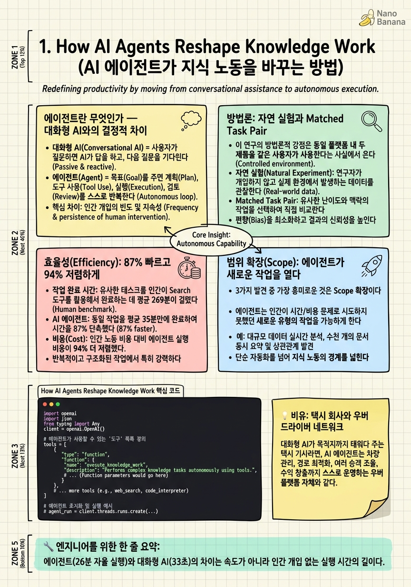

How AI Agents Reshape Knowledge Work

🎯 학습 목표
- 에이전트와 대화형 AI의 차이를 '자율성'이라는 키워드로 설명할 수 있다
- Yang et al. 논문이 활용한 자연 실험(matched task pair) 방법론을 이해한다
- Autonomy·Efficiency·Scope 3차원 프레임을 실제 수치와 함께 기억한다
- O*NET 직업 분류 체계를 AI 연구에 어떻게 적용할 수 있는지 안다
- 에이전트 도입이 지식 노동자에게 가져오는 기회와 위협을 균형 있게 논할 수 있다
2025년, 경제학자와 AI 연구자들이 오랫동안 기다려온 질문에 드디어 실증적 답이 나왔다: AI 에이전트는 단순한 챗봇과 실제로 얼마나 다른가? Jeremy Yang, Kate Zyskowski, Noah Yonack, Jerry Ma가 발표한 arXiv:2606.07489는 Perplexity의 프로덕션 데이터를 활용해 이 물음에 정면으로 답한다.
연구의 핵심은 비교 설계(matched task pair)다. 같은 사용자, 비슷한 작업을 수행할 때 대화형 검색(Search 제품)과 자율 에이전트(Computer 제품)를 쓴 결과가 어떻게 달라지는지를 자연 실험처럼 분석했다. 두 제품이 같은 플랫폼 안에 있어서 동일 사용자의 행동을 비교할 수 있었다는 점이 이 연구를 특별하게 만든다.
결과는 놀랍다. 에이전트는 세션당 26분의 자율 작업을 수행했다(검색은 33초). 사용자 불만족률이 55% 줄었고, 작업 완료 시간은 269분에서 36분으로 줄었다(87% 단축). 그리고 아마도 가장 흥미로운 발견은 범위 확장(Scope) — 에이전트를 쓰는 사람들은 이전에는 엄두도 못 냈던, 여러 직업 영역을 넘나드는 복잡한 고차원 인지 작업을 시도하기 시작했다.
핵심 내용
에이전트란 무엇인가 — 대화형 AI와의 결정적 차이
대화형 AI(Conversational AI) = 사용자가 질문하면 AI가 답을 하고, 다음 질문을 기다린다. 매 단계마다 인간이 방향을 정해준다. GPT에서 "이것 좀 요약해줘"라고 치면 요약해주는 방식이 여기에 해당한다.
자율 에이전트(Autonomous Agent) = 사용자가 목표를 주면 AI가 스스로 계획을 세우고 실행한다. 중간에 브라우저를 열고, 파일을 다운로드하고, 코드를 실행하고, 결과를 정리하는 모든 과정을 AI가 알아서 한다. 인간은 처음에 "이런 리포트 만들어줘"라고 말하고 기다리면 된다.
이 차이를 Yang et al.은 자율성(Autonomy) 이라는 차원으로 정량화했다. 에이전트가 얼마나 오랫동안, 얼마나 많은 하위 작업을 인간 개입 없이 실행하는지를 측정한 것이다. Perplexity Computer의 경우 세션당 평균 26분의 자율 작업을 수행했다 — Perplexity Search의 33초에 비해 약 47배 더 긴 자율 실행 시간이다.
왜 이 숫자가 중요한가? 33초는 '하나의 검색 쿼리를 처리하는 시간'에 가깝다. 26분은 '사람이라면 수십 번 질문하고 결과를 통합해야 할 프로세스 전체를 혼자 돌리는 시간'이다. 에이전트는 단순히 더 빠른 검색 엔진이 아니라 태스크 분해와 실행을 인간 대신 담당하는 시스템이다.
| 특성 | 대화형 AI (Search) | 자율 에이전트 (Computer) |
|---|---|---|
| 자율 실행 시간 | ~33초 / 세션 | ~26분 / 세션 |
| 태스크 분해 주체 | 인간 | AI |
| 중간 개입 빈도 | 매 단계 | 최소화 |
| 사용 패턴 | Q&A 반복 | 목표 제시 → 결과 수령 |
방법론: 자연 실험과 Matched Task Pair
이 연구의 방법론적 강점은 동일 플랫폼 내 두 제품을 같은 사용자가 사용한다는 사실에서 온다. 실험실에서 인위적으로 구성한 조건이 아니라, 실제 프로덕션 환경에서 수백만 건의 사용 데이터를 분석했다.
Matched Task Pair(매칭된 태스크 쌍) 설계는 이렇게 작동한다: 동일 사용자가 유사한 작업 유형을 Search로 할 때와 Computer로 할 때를 쌍으로 묶어 비교한다. 이를 통해 '사용자 개인의 성향'이나 '작업의 어려움'이라는 교란 변수를 통제할 수 있다.
O*NET(Occupational Information Network) 분류 체계는 작업의 '종류'를 표준화하기 위해 활용됐다. ONET은 미국 노동부가 관리하는 직업 분류 데이터베이스로, 각 직업을 수행하는 데 필요한 기술·지식·활동을 세분화해서 기술한다. Yang et al.은 사용자의 작업 요청을 ONET의 Work Activity 분류에 매핑해서 어떤 종류의 지식 노동이 에이전트로 전환되고 있는지를 분석했다.
이 방법론의 한계도 솔직하게 인정한다. Perplexity 사용자는 일반 인구 대표 표본이 아니며, 두 제품의 사용 맥락이 완벽히 동일하지는 않다. 그럼에도 실제 서비스 규모의 데이터를 활용한 준-실험적 설계는 에이전트 효과를 추정하는 현재로서는 가장 강력한 방법 중 하나다.
효율성(Efficiency): 87% 빠르고 94% 저렴하게
작업 완료 시간: 유사한 태스크를 인간이 Search 도구를 활용해서 완료하는 데 평균 269분이 걸렸다. Computer 에이전트는 36분. 87% 단축이다. 10시간짜리 작업이 1시간짜리가 된다는 의미다.
비용 절감: 인간의 시간 가치($시간당 임금)와 에이전트 API 비용을 비교하면 94% 비용 절감이 나온다. 에이전트는 월급을 받지 않고 병렬로 실행된다.
품질: 사용자 불만족률이 55% 감소했다. 이것은 에이전트가 단순히 빠른 것이 아니라 더 나은 결과를 내놓는다는 의미다. 논문은 이를 두 가지 메커니즘으로 설명한다:
-
병렬 처리: 에이전트는 동시에 여러 소스를 검색하고 교차 검증한다. 인간은 순차적으로 탭을 열어 읽는다.
-
태스크 분해 품질: 복잡한 요청을 하위 태스크로 분해할 때 에이전트는 빠뜨리는 단계가 적다.
\[\text{Efficiency Gain} = 1 - \frac{t_{\text{agent}}}{t_{\text{human}}} = 1 - \frac{36}{269} \approx 87\%\]
여기서 주목할 것은 이 수치가 특정 태스크 유형에 편향되지 않았다는 점이다. 리서치, 분석, 코드 작성, 문서 정리 등 다양한 지식 노동 범주에 걸쳐 일관된 효율성 향상이 관찰됐다.
범위 확장(Scope): 에이전트가 새로운 작업을 열다
3가지 발견 중 가장 흥미로운 것은 Scope 확장이다. 에이전트를 쓰는 사람들은 단순히 기존 작업을 더 빠르게 하는 것이 아니라, 이전에는 시도하지 않았던 더 복잡한 작업을 새로 시도하기 시작했다.
ONET 분류 결과를 보면, Search 사용자가 주로 '정보 수집'과 '데이터 처리'에 집중하는 반면, Computer 에이전트 사용자는 여러 직업 영역을 넘나드는 고차원 인지 작업*을 더 많이 요청한다. 예를 들어, 시장 조사 + 재무 분석 + 경쟁사 비교 + 전략 제안을 하나의 세션에서 처리하는 식이다.
이 패턴은 경제학의 '잠재 수요 활성화(Latent Demand Activation)' 개념과 맞닿는다. 에이전트가 없었을 때는 "이런 분석은 비용(시간)이 너무 많이 들어서 안 하는 게 낫다"고 판단했던 작업들이, 에이전트 덕분에 경제적으로 실행 가능해진 것이다.
Cross-occupational scope도 주목할 만하다. 에이전트 세션에서는 단일 직업 도메인(예: '마케팅')에 머물지 않고 법률 검토, 재무 모델링, 기술 구현 가능성 분석을 동시에 요청하는 비율이 Search보다 높게 나타났다. 이는 에이전트가 전문가를 여러 명 대신하는 역할을 하기 시작했음을 시사한다.
지식 노동의 미래: 대체인가 보완인가
논문은 '대체 vs 보완' 논쟁에서 신중한 입장을 취한다. 단기 데이터만 보면 보완(Complementarity)의 증거가 강하다. 에이전트를 쓰는 사람들은 작업을 줄이는 것이 아니라, 더 많은 작업을 더 높은 수준으로 처리하게 된다.
그러나 장기적으로는 다른 이야기다. 논문이 언급하는 Acemoglu(2019)의 연구는 자동화 기술이 처음에는 생산성을 높이지만 결국 특정 직업군의 소득 비중을 감소시키는 경로를 밟는다고 주장한다. Autor et al.(2024)의 최근 연구도 AI는 '보완'과 '대체'를 동시에 진행한다는 점을 보여준다.
Yang et al.이 제시하는 가장 중요한 인사이트는 "에이전트는 지식 노동의 한계비용을 0에 가깝게 만든다" 는 것이다. 이것은 단순히 '더 빨리 일한다'가 아니다. 한계비용이 0에 가까워지면 이전에는 경제성이 없었던 작업의 종류가 달라진다. 지금까지 '시니어 컨설턴트 10명이 3개월 걸릴 분석'이 에이전트를 쓰면 '1인이 하루에 가능한 분석'이 되는 세상이 온다.
핵심 질문: 이 변화 속에서 지식 노동자가 가져야 할 역량은 무엇인가? 논문은 직접 답하지 않지만, 데이터는 말한다 — 어떤 질문을 던져야 하는지, 어떤 방향을 설정해야 하는지를 아는 사람이 에이전트를 가장 잘 활용하며, 그 격차는 도구가 강력해질수록 오히려 벌어진다.
💡 비유로 이해하기
AI 에이전트의 등장을 이해하는 데 도움이 되는 비유는 전통 택시 vs. 우버다. 전통 택시(대화형 AI)는 기사가 있고, 당신이 매 구간마다 "여기서 좌회전", "저기서 멈춰"를 지시해야 한다. 기사는 능숙하지만 지시가 없으면 움직이지 않는다.
우버(자율 에이전트)는 다르다. 당신은 목적지만 입력한다. 최적 경로 계산, 교통 상황 반영, 요금 정산 — 모든 하위 태스크가 자동으로 처리된다. 당신이 개입하는 것은 출발지와 도착지뿐이다.
Yang et al.의 데이터가 보여주는 것은 바로 이 차이의 경제적 결과다. 우버가 나오자 사람들은 기존에 '택시 타기엔 너무 짧거나 귀찮은' 거리도 이동하기 시작했다 — 잠재 수요가 활성화된 것이다. AI 에이전트도 마찬가지다. "이런 분석을 하려면 전문가 팀이 필요해서 못 했는데"라는 작업들이 에이전트로 처음 실행되기 시작하고 있다.
💻 코드 예시
Yang et al. 논문의 핵심 개념인 '에이전트의 자율 태스크 분해'를 재현하는 간단한 예시다. 사용자가 복잡한 리서치 요청을 하면 에이전트가 하위 작업으로 분해하고 자율 실행한다. OpenAI 함수 호출(tool use)을 활용한다.
import openai
import json
from typing import Any
client = openai.OpenAI()
# 에이전트가 사용할 수 있는 '도구' 목록 정의
tools = [
{
"type": "function",
"function": {
"name": "web_search",
"description": "웹에서 정보를 검색한다",
"parameters": {
"type": "object",
"properties": {"query": {"type": "string"}},
"required": ["query"]
}
}
},
{
"type": "function",
"function": {
"name": "summarize_findings",
"description": "검색 결과를 요약 리포트로 정리한다",
"parameters": {
"type": "object",
"properties": {
"findings": {"type": "array", "items": {"type": "string"}},
"format": {"type": "string", "enum": ["bullets", "prose", "table"]}
},
"required": ["findings", "format"]
}
}
}
]
def run_agent(user_goal: str, max_rounds: int = 5) -> str:
"""목표를 주면 에이전트가 자율 실행. Yang et al. 논문의 Computer 제품과 같은 패턴."""
messages = [
{"role": "system", "content": "당신은 자율 리서치 에이전트입니다. 목표를 하위 작업으로 분해해 도구를 사용하며 완수하세요."},
{"role": "user", "content": user_goal}
]
for round_num in range(max_rounds): # 자율 실행 루프 — 인간 개입 없음
response = client.chat.completions.create(
model="gpt-4o",
messages=messages,
tools=tools,
tool_choice="auto"
)
msg = response.choices[0].message
if not msg.tool_calls: # 도구 호출 없음 = 에이전트가 완료 판단
return msg.content
# 에이전트가 선택한 도구 실행 (실제 구현에서는 실제 API 호출)
messages.append(msg)
for tc in msg.tool_calls:
result = execute_tool(tc.function.name, json.loads(tc.function.arguments))
messages.append({"role": "tool", "tool_call_id": tc.id, "content": str(result)})
return "최대 라운드 도달 — 부분 결과 반환"
def execute_tool(name: str, args: dict) -> Any:
# 실제 구현체 — 여기서 브라우저/API/파일시스템 등을 제어
if name == "web_search":
return f"[검색 결과: {args['query']}에 관한 정보 3건]"
elif name == "summarize_findings":
return f"[요약 완료: {len(args['findings'])}건, {args['format']} 형식]"
# 사용 예 — 사용자는 목표만 준다
result = run_agent(
"AI 에이전트가 화이트칼라 직업에 미치는 영향을 조사하고 표로 정리해줘"
)
print(result)핵심은 for round_num in range(max_rounds) 루프다. 이 루프가 바로 Yang et al.이 측정한 '26분의 자율 작업' 시간 동안 반복된다. 매 라운드에서 에이전트는 (1) 다음 단계를 스스로 결정하고, (2) 도구를 선택해 실행하고, (3) 결과를 메모리(messages)에 추가한다. 인간은 run_agent(goal)을 호출한 뒤 결과가 올 때까지 기다리기만 한다 — 이것이 Search(매번 질문)와 Agent(목표 → 자율 실행)의 구조적 차이다.
🏭 현업에서의 평가
✅ 시니어가 보는 것
- 태스크 분해 품질: 복잡한 목표를 적절한 크기의 하위 작업으로 나누는가
- 도구 선택 정확도: 상황에 맞는 도구를 선택하고 올바른 파라미터로 호출하는가
- 오류 복구 능력: 중간 단계 실패 시 스스로 재시도하거나 우회 경로를 찾는가
- 컨텍스트 관리: 긴 자율 실행 도중 초기 목표를 잊지 않고 유지하는가
- 비용/속도 트레이드오프: 과도한 도구 호출 없이 효율적으로 완료하는가
⚠️ 레드 플래그
- 에이전트 = 그냥 빠른 챗봇이라고 생각하는 것 — 자율성 차원을 무시하는 설계
- 무한 루프 방지 없는 에이전트 — max_rounds 같은 탈출 조건 미구현
- 모든 작업에 에이전트 투입 — 단순 Q&A에 26분짜리 에이전트를 쓰는 오버엔지니어링
- 사용자 행동 변화 측정 안 함 — 효율성만 측정하고 Scope 확장 효과를 놓치는 것
🎤 예상 인터뷰 질문
- Yang et al.이 'Scope 확장'을 측정한 방법(O*NET 분류)의 강점과 한계는 무엇인가?
- 에이전트의 '자율 실행 26분'이 항상 좋은 것인가? 어떤 상황에서 장기 자율 실행이 위험할 수 있는가?
- 같은 회사 내 Search와 Computer를 matched pair로 비교하는 설계의 내적 타당도(internal validity)는 어느 정도인가? 어떤 교란 변수가 남아 있는가?
✨ 핵심 요약
자율성 = 47배 더 긴 실행
에이전트(26분 자율 실행)와 대화형 AI(33초)의 차이는 속도가 아니라 인간 개입 없는 실행 시간의 길이다.
87% 빠르고 94% 저렴
동일 태스크를 에이전트가 수행할 때 시간은 269분 → 36분, 인간 대비 비용도 94% 절감된다.
품질도 55% 향상
사용자 불만족률 55% 감소 — 에이전트는 빠른 것뿐 아니라 결과의 품질도 개선한다.
Scope 확장이 가장 중요한 발견
에이전트를 쓰는 사람들은 기존 작업을 빠르게 하는 것을 넘어, 이전에는 엄두도 못 냈던 복잡한 고차원 작업을 새로 시도한다.
O*NET으로 작업 유형을 계량화
미국 노동부 직업 분류 데이터베이스를 활용해 AI가 어떤 종류의 지식 노동을 얼마나 처리하는지를 표준화된 방식으로 분석했다.
한계비용 → 0의 경제학
에이전트는 지식 노동의 한계비용을 0에 가깝게 만들어, 경제성이 없어 하지 못했던 분석들이 실행 가능해지는 세상을 연다.
보완이 지금, 대체는 서서히
단기 데이터는 보완(사람이 더 많은 것을 하게 된다)을 지지하지만, 장기적 노동 시장 영향은 Acemoglu 등의 선행 연구가 경고하듯 단순하지 않다.
방향 설정 능력이 핵심 역량
에이전트가 강력해질수록 '무엇을 어떻게 실행하는가'가 아닌 '어떤 목표를 설정하는가'가 인간의 차별적 역량이 된다.